Байкало-Амурская магистраль
Стройка века
ИСТОРИЯ СТРОИТЕЛЬСТВА БАМА
БАМ– задачи строительства магистрали.
Идея строительства железнодорожной магистрали, которая связывала бы побережье Тихого Океана и остальную страну через Байкал, была высказана еще в 1888 году. Однако, после обследования был сделан вывод, что строительство железной дороги в тех местах невозможно, прежде всего, из-за огромных технических трудностей. Работы начались уже при Советской власти. 1974 год считается годом второго рождения БАМа. Комплекс БАМ призван решать четыре важные задачи общегосударственного масштаба:
а) строительство железной дороги, как основной элемент комплексного освоения производительных сил Иркутской области, Бурятии, Забайкалья, Якутии, Амурской области и Хабаровского края. Маршрут трассы прошел в районах крупнейших неразработанных месторождений полезных ископаемых, находившихся в этих регионах, в том числе медного Удоканского, крупнейших нефтегазоносных (Чаяндинское и Верхнечонское) и угольных (Нерюнгринское и Эльгинское) месторождений Якутии, полиметаллических (Чинейское) и урановых (Холодненское) месторождений Бурятии и Читинской области
б) 1970-е годы высокие цены на нефть стимулировали государственные инвестиции, и объемы перевозок по Транссибу значительно выросли, вызвав у руководства страны опасение, что пропускная способность Трансиба окажется недостаточной. В перспективе ставилась задача продолжить БАМ на север на Якутск, далее на Магадан, Чукотку и Камчатку.
отдаленность от границы с Китаем дает возможность разместить в глубине дальневосточного региона военно-стратегические запасы, обеспечивал устойчивость транспортного сообщения, маневр силами и средствами в случае обострения военно-политической ситуации в регионе.
увеличение численности населения дальневосточного региона.
Строительство магистрали проходило по нескольким направлениям - западный и центральный участки - «Великая комсомольская стройка», гражданское строительство. Восточное направление – железнодорожные войска.
Строительство и эксплуатация осложнялись:
- труднодоступностью местности;
- сложными природно - климатическими условиями;
- слабым экономическим развитием районов, по которым проложена магистраль;
- удаленностью от промышленных центров;
- недостаточным развитием социально-бытовой инфраструктуры;
- дефицитом трудовых ресурсов.
Железнодорожные войска при строительстве Восточного направления БАМа.
Министерство обороны СССР возложено строительство одного из больших участков БАМа восточного крыла. В строительстве магистрали участвовало два армейских железнодорожных корпуса, располагавшихся в самых труднодоступных регионах Дальнего Востока. В Тынде и Чегдомыне действовали штабы этих объединений центральное руководства было поручено Главному управлению железнодорожных войск (ГУЖВ), находившемуся в Москве под командованием генерал-полковника А.М. Крюкова.
В состав отдельной железнодорожной бригады в разные годы строительства БАМа входили от 12 до 22 отдельных батальонов и обслуживающих частей и организаций. По мере выполнения задач одни соединения и части расформировывались, другие убывали на новые стройки, а необходимые силы и средства оставлялись на достройку.
В составе объединений Железнодорожных войск действовали соединения и части, приведенные в таблице:
| Управления корпусов | Управления соединений и в/частей | Место формирования, откуда прибыли | Место размещения на БАМе | Время прибытия на БАМ |
|---|---|---|---|---|
| Тындинское | 46120 | сформировано на месте | Тында | сентябрь 1974 г. |
| 36534 | из г. Конотопа Сумской области | Дипкун | февраль 1975 г. | |
| 33014 | из г. Мурома Владимирской области | Тында | июнь 1974 г. | |
| 40976 | Сформировано в г. Куйбышеве | Зенск | июль 1979 г. | |
| 59302 | из г. Улан-Батора, МНР | Маревая | март 1975 г. | |
| Чегдомынское | 12661 | из г. Харькова | Чегдомын | ноябрь 1974 г. |
| 06430 | из г. Омска | Алонка | январь 1975 г. | |
| 45505 | из г. Волгограда | Березовый | январь 1975 г. | |
| 20724 | г. Хабаровск | отдельные части | с 1974 г. | |
| 51473 | сформировано в г. Красноярск | Ургал | сентябрь 1974 г. | |
| 01228 | из г. Читы | Февральск | январь 1975 г. | |
| 56718 | сформировано на базе двух мостовых и технического батальонов в месте дислокации | Воспорухан | март 1978 г. |
Большую помощь железнодорожникам оказывали два специально созданных вертолетных отряда.
Первым на БАМ был путевой батальон из Мурманска, который уже в майские праздники 1974 года прибыл в пос. Тындинский, совершив комбинированный марш в несколько тысяч километров. За ним начали выдвигаться части 35, 37, 4, 7 и 39 железнодорожных бригад, 35, 30 и 42 ждп, а также вертолетный отряд из Тюмени, отдельные батальоны из других соединений войск на прежней базе которых формировались новые. 37 мждп формировался на месте в Воспорухане, на основе тоннельного батальона, прибывшего из Имишлы, мостового батальона, ранее прибывшего в Алонку и технического батальона из Свободного. Десятки эшелонов с личным составом, техникой и вооружением, строительными материалами, стали непрерывным потоком выдвигаться на станции: Сковородино, Большой Невер, Шимановск, Арга, Ургал, Хурмули, Горин, Эворон, Вели (Березовка-Постышево), разъезды и станции недостроенной линии Бамовская – Тында, шла их выгрузка, выдвижение к новым местам дислокации на Восточном участке БАМ.
Железнодорожные батальоны, как во время войны, не назывались напрямую своими воинскими номерами (например, в/ч 30976), а имели таблички с надписью «хозяйство» и дальше шла фамилия командира части. Например, если комбатом был какой-нибудь майор Иванов, то обязательно перед КПП стояла табличка с надписью «Хозяйство Иванова». Объяснялась такая «секретность» близостью китайской границы Связь между отрядами осуществлялась при помощи радио и телефона, специальным курьерам.
«Мехбат, куда нас отправили из Тынды, как и все подобные части, стоял на так называемой «отсыпке». Это означало, что прямо на маревое болото сверху был насыпан песок общей площадью где-то в 3 кв. км. Толщина слоя песка составляла около 1 метра. На этой «отсыпке» размещался механизированный батальон со всей своей инфраструктурой»() - из воспоминаний
Никакого оружия в железнодорожных частях на трассе не было.
Военкоматы по целевому назначению набирали новобранцев на срочную действительную воинскую службу сроком на 2 года, а после учебки отправляли на БАМ. Срок службы офицеров составлял 5-6 лет.
Национальный состав батальнов включал в себя представителей практически со всего Союза: казахи, киргизы, литовцы, молдаване, украинцы, армяне, грузины, азербайджанцы, чеченцы, ингуши и русские.
Главной задачей начального периода было пробиться сквозь болота и скалы к тем местам, где намечалось создать опорные пункты строительства, построить там жильё, различные культурно-бытовые помещения, завезти технику, строительные материалы, продовольствие, то есть создать необходимые условия для труда и отдыха личного состава, семей офицеров и прапорщиков. Одновременно прокладывались временные автомобильные дороги – «зимники».
Всё это надо было сделать в сжатые сроки, до наступления весенней распутицы, которая отрезала бы головные группы от основных баз. Одному из отрядов первопроходцев предстояло пройти более 40 км по местам и провести технику: автомобили, тракторы, пилораму, доставить туда палатки, инструмент, запасы продовольствия. Возглавил отряд опытный командир инженер-подполковник Я.И. Паращенко. Четверо суток шли воины по безлюдной тайге. К исходу четвёртого дня штаб части поступила радиограмма: «...Находимся на 38-м километре. Трактора «разуты», «КрАЗы» увязли в трясине. Пробиваемся пешком...» Однако, несмотря ни на какие трудности, отряд вышел к намеченной цели и вывел затем всю технику, обеспечив выполнение задачи.
В период с 1974 по 1989 год было уложено около 1,6 тыс. км главного пути, что составило почти треть всей протяжённости БАМа
— 1974 г. были забиты первые колышки строительства на трассе.
— 5 февраля 1975 года на 2712-м километре от Усть-Кута воины-железнодорожники забили первый костыль главного бамовского пути. Право сделать это было предоставлено рядовому Леониду Смирнову. 9 мая, в день 30-летия Победы советского народа в Великой Отечественной войне, была введена в эксплуатацию соединительная линия БАМ – Тында протяжённостью 180 км, та самая, с которой для достижения победы над врагом в годы войны были сняты рельсы. Произвести укладку последнего, «серебряного» звена в Тынде получили право победители социалистического соревнования. Среди них – капитан Э. Захаров, старший лейтенант П. Русаков, ефрейторы В. Осипенко и В. Шифер, рядовой В. Ерохин. В тот же день по соединительной линии в столицу БАМа – Тынду пришёл первый рабочий поезд. Он доставил сборные дома, стройматериалы, оборудование. Первый бамовский год ознаменовался большими трудовыми успехами.
— В 1979 году был завершён участок Комсомольск-Берёзовка, который замкнул восточное кольцо БАМа (Известковая-Ургал-Комсомольск-Волочаевка).. В 1980 г. был сдан в постоянную эксплуатацию 200-километровый отрезок главного пути — от Постышево до Комсомольска-на-Амуре.
— 1982 году на восточном участке БАМа было открыто рабочее движение поездов от Тынды до станции Верхнезейск, a в ноябре того же года сдан в постоянную эксплуатацию 302-километровый участок от Ургала до Постышево.
— 16 апреля 1984 года на разъезде имени Героя Советского Союза В.П. Мирошниченко воины-железнодорожники уложили «золотое звено» Восточного участка БАМа. У места стыковки стальных рельсов воины-железнодорожники поставили столб со стрелками-указателями, показывающими впечатляющие расстояния: до Москвы – 7214 км, до Тынды – 491, до Комсомольска-на-Амуре – 995 км.
За 10 лет воины-железнодорожники уложили 1449 км главного пути и более 330 км — станционных, выполнено более 220 млн. кубометров земляных работ, построено 1217 искусственных сооружений, в том числе 45 больших и 296 средних мостов, 527 км линий связи. За годы строительства Восточного участка БАМа возвели новые города и поселки, построено около 30 станций и разъездов. Для их обустройства воины-бамовцы возвели 174 тыс. кв. м жилья, 8 школ, 13 детских садов и ряд других объектов.
Воинам-железнодорожникам доставались самые сложные участки. Это было связано с тем, что гражданские спициальсты в такие тяжелые условия труда не соглашались, большое колличество мостовых переходов. Байкало-Амурская магистраль пролегает по территориям, природные условия которых крайне разнообразны и сложны. Западный участок маршрута БАМа характеризуется горным рельефом. Для восточного участка маршрута характерно присутствие марей – болот на вечной мерзлоте. Почти для всех районов прохождения Байкало-Амурской магистрали характерны крайняя суровость климата, определяющая наличие вечной мерзлоты, глубина которой доходит от одного до сотен метров. От Ургала до Березовки, частым стихийным бедствием является схождение селевых потоков. Первая весна на БАМе преподнесла урок: в результате работы тяжелой техники, вырубки лесов, выемки грунта происходил процесс таянья вечной мерзлоты. В результате уже уложенное полотно разрушалось, пришлось меня технологию земляных работ. Здания и искусственные сооружения возводилиь на фундаментах из свай, погружаемых на глубину, не подверженную на столбчатых опорах. Применяются новые бесфундаментные металлические трубы для пропуска воды. При строительстве часто использовалось возведение галерей.
Отсыпка земляного полотна и насыпей по марям велась прямо на растительный слой, чтобы не обнажать вечную мерзлоту. Выемка грунта так же представляла большую сложность, так как в данном районе он скальный. Его необходимо было сначала извлечь с помощью взрывных работ, затем дробить и только после этого использовать для отсыпки. Продолжительные низкие температуры превращали топливо для сваебойных агрегатов в лед. При возведении мостов через Правый и Левый Орокот, заменили массивные монолитные опоры на столбовые основания.
Одним из подвигов воинов-железнодорожников стало строительство 622-метрового моста через реку Бурею. В 50-градусный мороз пробную сваю мостовики забивали четыре дня. Снова и снова взлетал и падал молот копра, а свая углублялась только на 20 сантиметров. На льду установили кузницу, чтобы не тратить время и силы на подвоз деталей. 15 апреля, за несколько дней до весеннего паводка, на мосту был уложен последний пролёт. На работу ушло три месяца – для такого объекта это рекордно малый срок.
А летом мост пришлось спасать. После затяжных ливней началось наводнение, по реке пошли поваленные деревья, они сгрудились вокруг свай моста. Конструкция в любую минуту могла рухнуть. И снова на помощь пришли железнодорожники в военной форме. Десант – отряд добровольцев – доставили на место сражения с вертолётов. Борьба со стихией продолжалась сутки – и мост удалось спасти.
Ещё больших усилий потребовало строительство Дуссе-Алиньского тоннеля. Этот подземный коридор пробили в скалах ещё в предвоенные годы, но тогда строительство законсервировали, и тоннель не действовал. За эти годы дренажные устройства обветшали, всюду проникала и тут же замерзала вода. Недостроенный тоннель заполонили ледяные глыбы. Железнодорожникам предстояло пробиться сквозь тысячи кубометров льда и проложить в тоннеле путь для поездов.
Инженеры предложили растопить в тоннеле лёд тёплым воздухом. Ледяную гору, которая преграждала дорогу в тоннель, взорвали, а потом начали работать вентиляторы и теплогенераторы. По рукавам, проложенным через щели, в тоннель устремился тёплый воздух. За сутки растопили около 300 кубометров льда. Методом растопки со льдом удалось справиться в четыре раза быстрее, чем это предполагалось изначально. Но беспрецедентная работа никогда не обходится без нештатных ситуаций. Нужно было ликвидировать пробку, которая возникла в середине тоннеля, затопленного водой. В разведку пошла группа сержанта Марийченко. За три месяца воины разморозили и очистили вручную тоннель ото льда и гальки. Всего, по данным из различных источников было растоплено и вывезено из тоннеля от 32 до 35 тысяч кубометров льда. (Арсений Замостьянов , Воины на магистрали)
Быт. Железнодорожные батальоны фактически круглогодично жили на болотах, на так называемых «отсыпках» из песка слоем около 1 метра. Офицеры-железнодорожники жили, как правило, в строительных вагончиках. А вот солдаты спали даже в 50-градусный мороз в армейских палатках, подбитых войлоком и натянутых на деревянные срубы. Отапливались печкой «а ля буржуйка», сделанные из 200-литровых железных бочек. Через всю палатку тянулся «кардан» ― вытяжная труба, которая обогревала вокруг себя территорию в 2 метра. В результате в палатке температурный режим зимой был весьма своеобразным: на нижнем ярусе замерзала вода, а на верхнем — жара +40-45 градусов.. Кровати были двухъярусными и стояли на высоких чурках, чтобы спать было теплее. Проявление дедовщины выражалось в следующем — солдаты первого года службы зимой спали внизу, а старослужащие наверху.
Из воспоминаний полковника Василия ПАВЛЕНКО: « Что касается жизни на трассе, то там все мы жили в одних условиях. Это были либо вагончики, либо полевые палаточные городки. Вместе с солдатами жили, спали, питались – все в одних условиях. Да и мороз нам был не страшен. Во-первых, когда работаешь, не таким уж он и сильным кажется. А во-вторых, командование создавало нам все необходимые условия. Вагончики всегда были теплыми, а палаточные городки строились в бамовском – утепленном – варианте, когда делался деревянный сруб, обтягивался палаткой, ставилась печка – и это создавало вполне нормальные, хоть и не сказать что комфортабельные, полевые условия. Помещения топились круглосуточно. Существовала специальная команда по заготовке дров и истопник на каждый вагончик» Работы проводились круглосуточно в две смены и люди, и механизмы.. Машины, трактора, экскаваторы и прочую технику не глушили, так как, зимой она могла не завестись. На строительстве БАМа было задействовано 800 единиц японской техники. Были поставки из— Америки, Германии. Из воспоминаний В. Н. Скутнева: «Техника была очень хорошая, с отапливаемыми кабинами, так, что и в рубашках работать можно было. Буровая установка БТС-150 была советского производства и подобных изысков не имела. Так, она и была предназначена для советского человека, способного найти выход из любой ситуации. Покумекали и улучшили конструкцию — и в салоне стало намного теплее»
Питание. Офицеры, и солдаты питались из одного котла. На трассе основным блюдом в меню были каши, которые чередовались с макаронами. «Масло» было сильно замороженным, и намазать его на хлеб было невозможно, поэтому ели вприкуску, макая в горячий чай. По праздникам давали варёные яйца, конфеты-карамельки и печенье. Иногда было «пюре» из мороженной или порошкообразной картошки. Не было и молочных продуктов, кроме сгущенки. На трассу часто привозили так называемый «хлеб для геологических партий». Каждая буханка этого «хлеба» была герметично запакована в целлофановый пакет с парами спирта, в результате буханка не черствела 2 месяца. Правда, такой «хлеб» имел устойчивый привкус резины и употреблять его было не комильфо, но другого порою не было. Согласно указаниям генерала Макарцева в тайге строились банно-прачечные комбинаты, а для обеспечения свежим хлебом каждой части выделили оборудование для полевого хлебопечения. Позже появились стационарные хлебопекарни. Денег у солдат практически не было, но даже если и были, то купить на них было нечего. Раз в две недели приезжали автолавки с постоянным ассортиментом: папиросы, печенье, конфеты, сгущенка, томатный сок.
Вода была привозная, и ее хватало только на готовку пищи, в зимний период приходилось растапливать в больших баках снег и лед.
Не смотря на все трудности климатические, бытовые военные железнодорожники справились с поставленными государством задачей. Личный состав 1 –го железнодорожного корпуса удостоен ордена Октябрьской Революции, 35 железнодорожной бригады – ордена Трудового Красного Знамени, 5 офицеров и генералов войск удостоены звания Героев Социалистического труда, 2 – Государственной премии СССР, 25 офицеров, строителей БАМа, стали лауреатами премии Ленинского комсомола в области производства, тысячи солдат, сержантов, прапорщиков и офицеров, гражданских специалистов железнодорожных войск удостоены различных орденов и медалей, в том числе, «За строительство Байкало-Амурской магистрали».
Комплекс БАМ призван решать четыре важные задачи общегосударственного масштаба:
Строительство магистрали проходило по нескольким направлениям. Восточное направление осуществлялось Советскими железнодорожными войсками. Воинам-железнодорожникам доставались самые сложные участки. Это было связано с тем , что гражданские спициальсты в такие тяжелые условия труда не соглашались, большое колличество мостовых переходов.
За 10 лет воины-железнодорожники уложили 1449 км главного пути и более 330 км — станционных, выполнено более 220 млн. кубометров земляных работ, построено 1217 искусственных сооружений, в том числе 45 больших и 296 средних мостов, 527 км линий связи. За годы строительства Восточного участка БАМа возвели новые города и поселки, построено около 30 станций и разъездов. Для их обустройства воины-бамовцы возвели 174 тыс. кв. м жилья, 8 школ, 13 детских садов и ряд других объектов.
В результате работы тяжелой техники, вырубки лесов, выемки грунта происходил процесс таянья вечной мерзлоты. В результате уже уложенное полотно разрушалось, приходилось менять технологию земляных работ. Накоплен опыт строительства капитальных, временных искусственных сооружений в условиях низких температур и вечной мерзлоты. Восточный участок БАМа вступил в строй с действующей линией МПС.
Личный состав 1 –го железнодорожного корпуса удостоен ордена Октябрьской Революции, 35 железнодорожной бригады – ордена Трудового Красного Знамени, 5 офицеров и генералов войск удостоены звания Героев Социалистического труда, 2 – Государственной премии СССР, 25 офицеров, строителей БАМа, стали лауреатами премии Ленинского комсомола в области производства, тысячи солдат, сержантов, прапорщиков и офицеров, гражданских специалистов железнодорожных войск удостоены различных орденов и медалей, в том числе, «За строительство Байкало-Амурской магистрали».
Заключение
Строительство БАМа было великим событием в жизни нашего государства. Это был великолепно продуманное решение. С одной стороны, оно было направлено на ускоренное развитие Восточной Сибири и Дальнего Востока. А с другой – на укрепление обороноспособности нашей страны. Ведь мы получили выход к Тихому океану в 1000 километрах от госграницы.
Сейчас экономика нашей страны полностью переориентируется на восток. Китай, Япония, Южная Корея, Индия заинтересованы в поставках российской продукции. « Все, кто когда-то говорил, что БАМ – это дорога в никуда, сегодня замолчали»- Г.Фадеев, экс-министр путей сообщения, первый президент РЖД:
В связи с этим 12 августа 2021 года началась реконструкция восточной ветки Байкало-Амурской магистрали. Участок протяженностью 340 километров увеличит транспортные возможности региона. Министр обороны РФ Сергей Шойгу заявил, что значение данного отрезка БАМа огромно, и для исполнения поставленных задач реконструкции магистрали подключены Железнодорожные войска, а студенты военных учебных центров будут проходить на этом объекте стажировку. Масштаб проекта расширения Байкало-Амурской магистрали сравним с объемом строительства магистрали в советское время.
«На вызовы времени мы можем ответить только пространственно-территориальным переосваиванием страны. Пришел новый исторический момент движения к Тихому океану и освоения Сибири и Дальнего Востока. Если мы поднимем Сибирский регион, мы усилим экономику и обеспечим безопасность России в целом» - А. Ильинский советник министра обороны
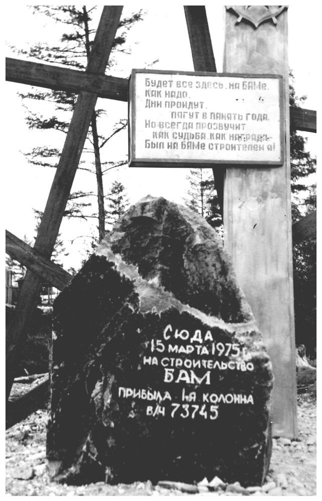 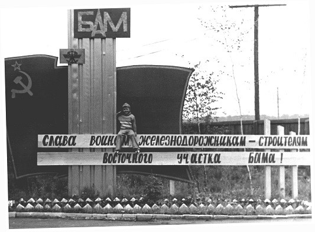 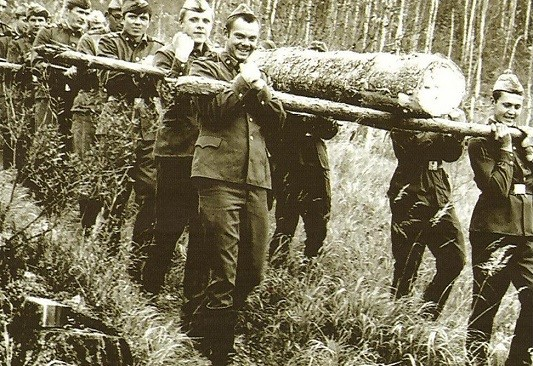 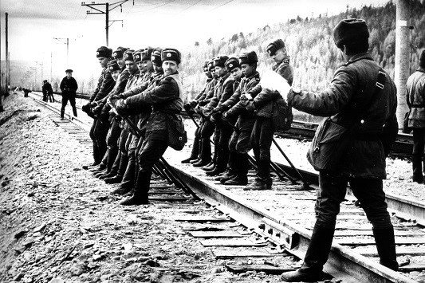 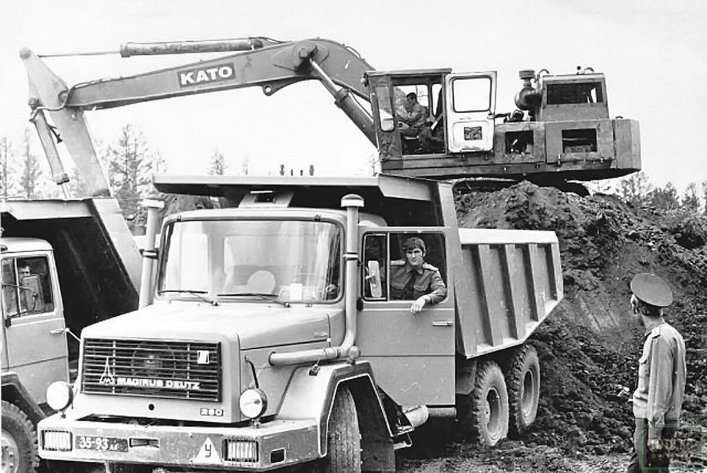 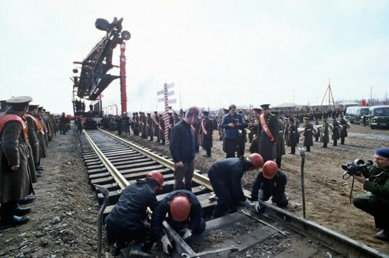 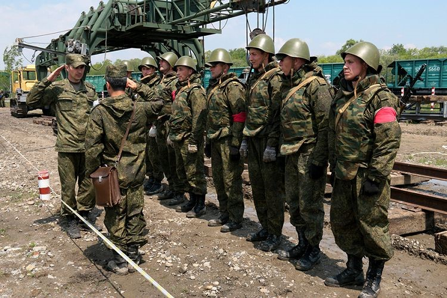 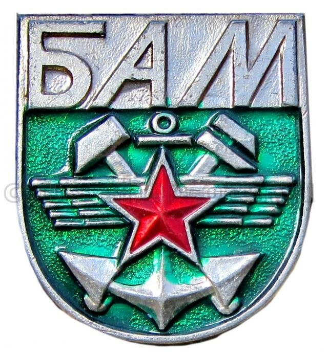 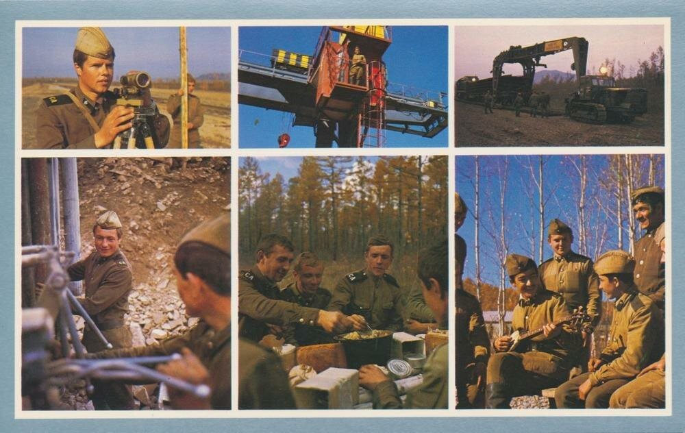Солдаты-железнодорожники, строившие восточное крыло БАМа - это военные комсомольцы.
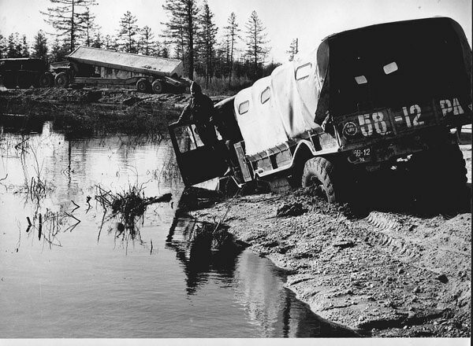Мужество и упорство в противовес суровому климату.
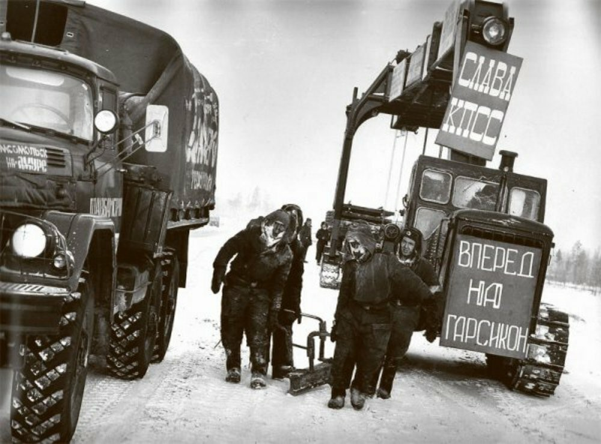 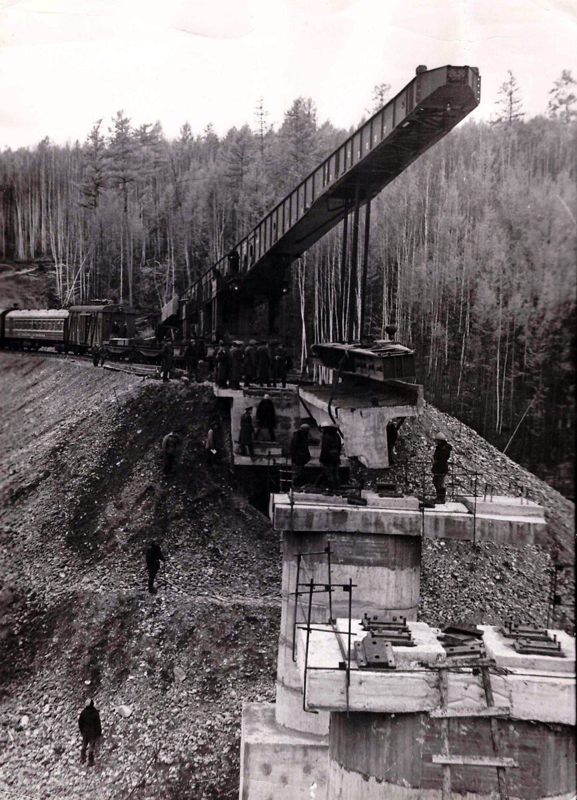Строительство очередного моста на Восточном БАМе.
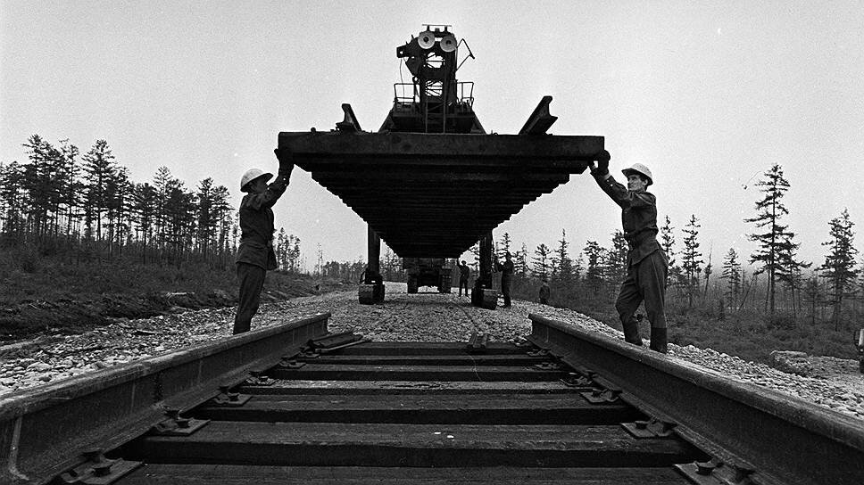Люди крепче стали. Военные железнодорожники построили значительную часть магистрали
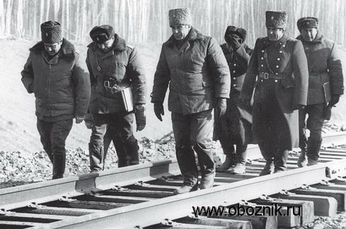